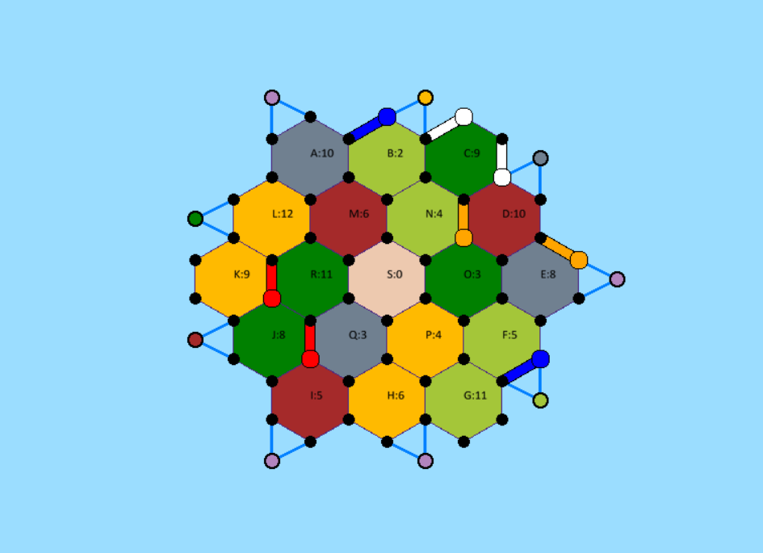
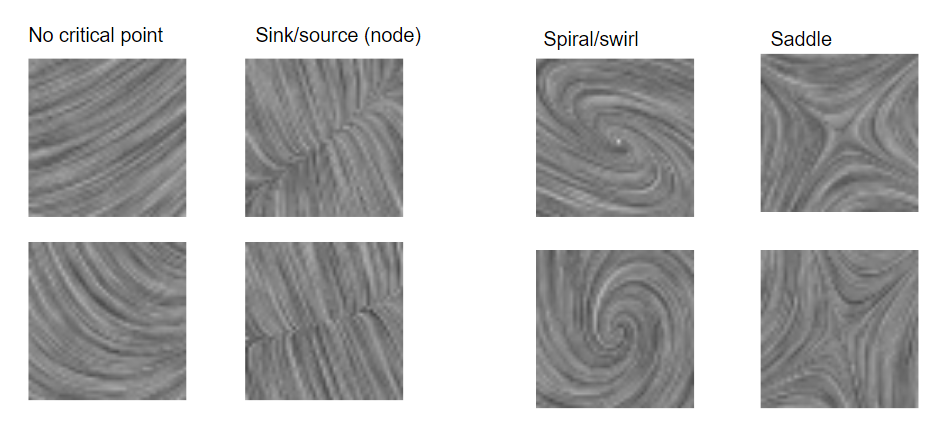

Current Projects
- Catan ML
- CNN Evalutation of Vector Field Visualizations
I am working on implementing the board game CATAN which is a complex game involving planning, long-term decision-making, probabilistic value evaluation, and social trading amongst players. I am first implementing the gameplay and will ultimately try to create agents to play this complex game.

This work is about combining scientific visualization with the work of Haehn on seeing how well CNNs compare to humans in the "user-study" common in data visualization.
